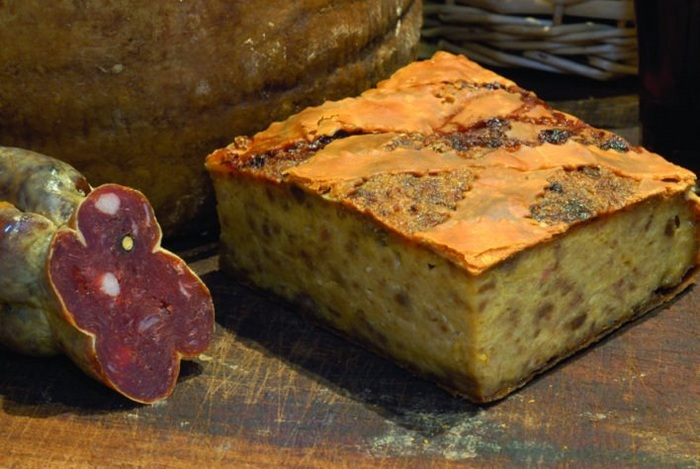
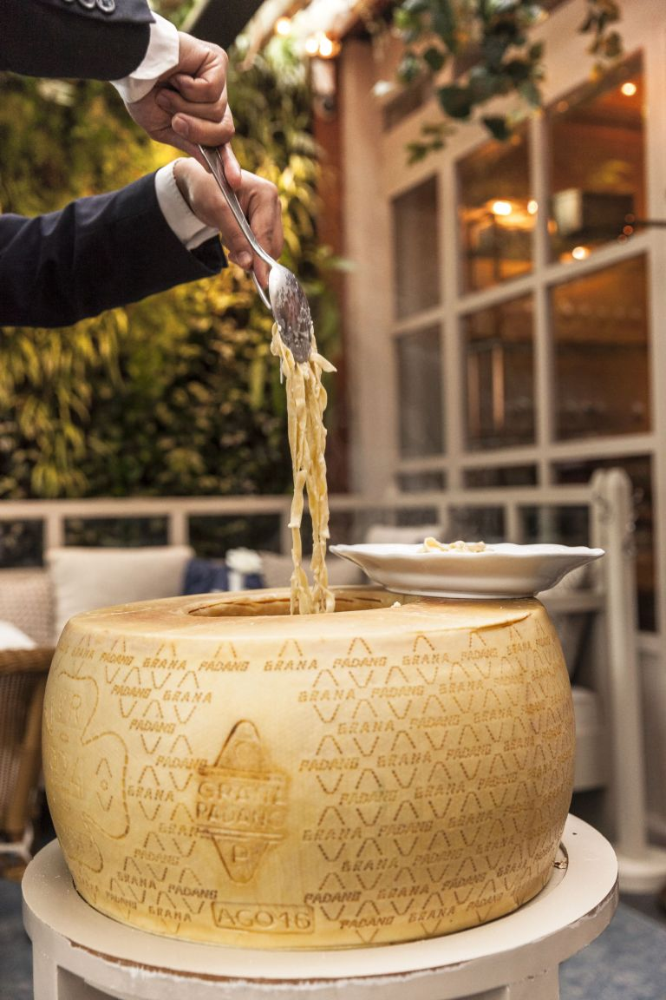

Pasticcio Caggianese

Ingredientes para 25 pedazos:
- 1 kg de ternera picada
- 2 kg de caciocavallo sin sal
- 2 kg de caciocavallo mediano
- 500 g de toma
- 500 g de queso de vaca
- 150 g de queso pecorino
- 200 g de pan duro
- 150-200 g de jamón crudo
- 2 vasos de leche
- huevos al gusto
Para la repostería
- 500 g de harina.
- 200 g de manteca de cerdo.
- una pizca de sal.
- 4 huevos.
Elaboración:
- Ponemos un plato con harina, sal y pimienta. Enharinamos cada trozo de carne en esa mezcla, eliminando el exceso. Calentamos en una cazuela el aceite de oliva a una temperatura media-alta.
- Añadimos la carne (en dos veces si no nos cabe de una vez) y dejamos que se sofría por una parte hasta que se dore bien. Le damos la vuelta y dejamos que se dore por el otro lado. Yo lo deje unos 4 minutos por cada lado. Sacamos la carne
a un plato.
- En la misma sartén en la que hemos marcado el osobuco, agregamos la cebolla, el ajo y la zanahoria, y lo salteamos durante 3 o 4 minutos, hasta que se ablande ligeramente.
- ertemos el vino y removemos todo. Tenemos que despegar también lo que se ha pegado en el fondo de la sartén. Aumentamos la temperatura y lo dejamos hasta que el líquido se haya espesado y se reduzca a la mitad, unos 3 a 4 minutos.
- Incorporamos los tomates y el caldo. Es el momento de que hierva, y a continuación, bajamos la temperatura para incorporar el osobuco. Tapamos la cazuela y lo cocinamos a fuego lento, dándolo la vuelta de vez en cuando, durante 1 hora.
Pasta alla Ruota

Ingredientes:
- 250 g de fettuccine al huevo.
- 180 g de parmesano Reggiano o Rueda de parmesano
- 80 g de mantequilla
- Sal
- Pimienta negra (opcional)
- Nuez moscada (opcional)
Elaboración:
- Cocer las fettuccine en abundante agua salada.
- Cuando las fetuccine estén ya al dente, echarlos a la mantequilla y el parmesano.
- Remover la mantequilla y el parmesano hasta formar una crema de la misma consistencia de una bechamel ligera.
- Condimentar la crema con un poco de pimienta negra y nuez moscada.
- Mezclar bien las fettucine con la crema.
- Servir con un poco mas de pimienta negra por encima.